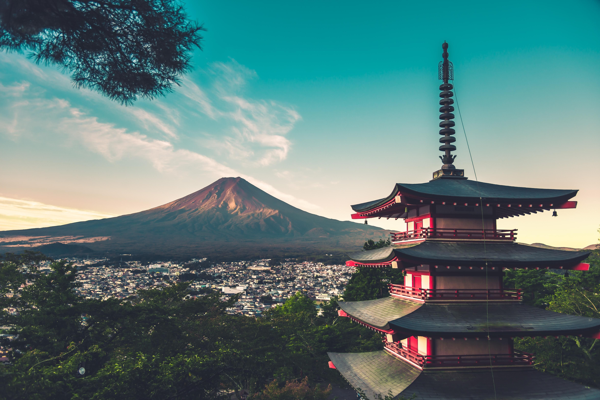

Goa is a state on the southwestern coast of India within the Konkan region, geographically separated
from the Deccan highlands by
the Western Ghats.The real beauty of Goa lies in its beautiful beaches, places of worship and world
heritage architecture.The top locations
where people like to stay in Goa are North and South Goa. Both these areas have beautiful beaches
and many attractions along with a distinctive atmosphere.
Foreign tourists, mostly from Europe, arrive in Goa in winter, whilst the summer and monsoon seasons
see many Indian tourists. Goa handled 2.29% of all foreign tourist arrivals in the country in 2011.
Bali, the Island of the Gods which located in the central part of Indonesia. It has tropical climate
with stunning natural scenery. White sandy beaches, customs ceremonials and culture are maintained.
The enchantment of Bali always makes anyone interested in exploring every corner.
The best time to visit Bali is between April and October, the island's dry season. Although the
weather is ideal for travellers, the island is also subject to soupy, humid days throughout the
year. Many shops offer sales and promotions; restaurants are less crowded in those mid-season
months.
Phuket is the largest Island city of Thailand, which was considered as a significant Malay port
during the Chinese invasion. Today, the place is known as the oldest city of Thailand, and one of
the busiest honeymoon destinations in Asia. Ranking on top as the best beach city, the place is
surrounded by the beauty of the Andaman ocean, providing a perfect setting for your vacation.
Offering a serene beach view, dotted with palm trees and pleasant ocean breeze, here one could find
the ultimate calm and peace during the day.
The best time to visit Phuket is during the dry and cool months from November to April. This is the
peak tourist season and best suited for all kinds of water activities like swimming, snorkeling, and
surfing. During this time, tourists can be a part of festivals like Phuket Bike Week and more.

Pokhara, Nepal's most popular tourist destination, is known for its Himalayan range and lakes.
Pokhara is also well-known for its adventure activities such as boating, trekking, rafting,
canoeing, and bungee jumping.
The city is a beautiful contrast of the bustling Lakeside Pokhara and Old Pokhara, which is home to
many beautiful historical temples and is also the city's commercial hub. Phewa Lake (or Phewa Tal),
a spectacular lake that borders Lakeside Pokhara and Old Pokhara, it flawlessly reflects the
mountains that border it, making it a breathtaking photo-op. The old city houses shops where you can
buy famous handicrafts, woodwork and woolwork. Don't forget to visit the Tibetan Mini Market for
one-of-a-kind souvenirs!
Seoul is the capital of South Korea and is known for its famous temples and four major palaces with
Gyeongbokgung being the most important one. Seoul is also famous for its cultural and artistic
attractions, traditional porcelain, textile, and jewelry.
The best times to visit Seoul are from March to May and from September to November, when the weather
is mild (average daily high temperatures stay below the mid-70s) and travel expenses are low. If
you're a powder hound, you'll want to visit between December and February, when average daytime
temperatures stay around the freezing mark and snow can be frequent.
Mount Fuji, Japanese Fuji-san, also spelled Fujisan, also called Fujiyama or Fuji no Yama, highest mountain in Japan. It rises to 12,388 feet (3,776 metres) near the Pacific Ocean coast in Yamanashi and Shizuoka ken (prefectures) of central Honshu, about 60 miles (100 km) west of the Tokyo-Yokohama metropolitan area. It is a volcano that has been dormant since its last eruption, in 1707, but is still generally classified as active by geologists. The mountain is the major feature of Fuji-Hakone-Izu National Park (1936), and it is at the centre of a UNESCO World Heritage site designated in 2013.
The Great Wall of China is a series of fortifications that were built across the historical northern
borders of ancient Chinese states and Imperial China as protection against various nomadic groups
from the Eurasian Steppe. Several walls were built from as early as the 7th century BC,[4] with
selective stretches later joined by Qin Shi Huang (220–206 BC), the first emperor of China.
Little of the Qin wall remains.[5] Later on, many successive dynasties built and maintained multiple
stretches of border walls. The best-known sections of the wall were built by the Ming dynasty
Sigiriya or Sinhagiri is an ancient rock fortress located in the northern Matale District near the
town of Dambulla in the Central Province, Sri Lanka. It is a site of historical and archaeological
significance that is dominated by a massive column of granite rock approximately 180 m (590 ft)
high.
According to the ancient Sri Lankan chronicle the Cūḷavaṃsa, this area was a large forest, then
after storms and landslides it became a hill and was selected by King Kashyapa (AD 477–495) for his
new capital. He built his palace on top of this rock and decorated its sides with colourful
frescoes.